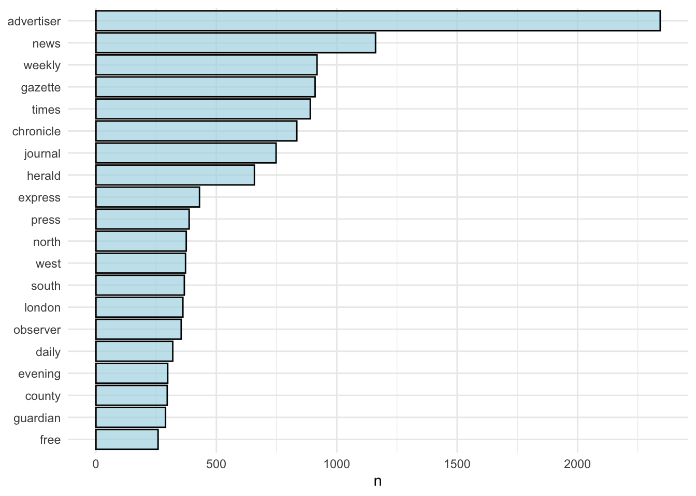
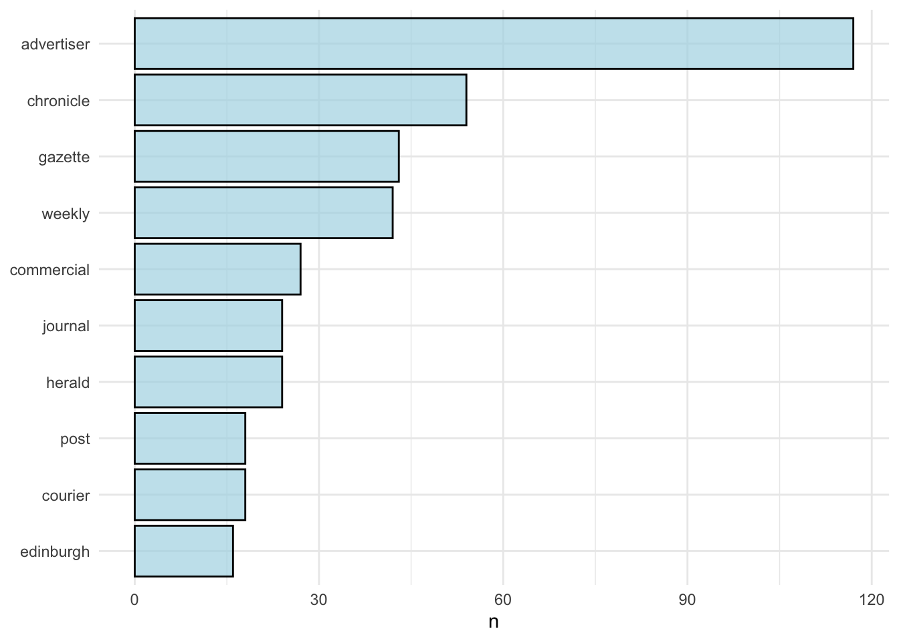
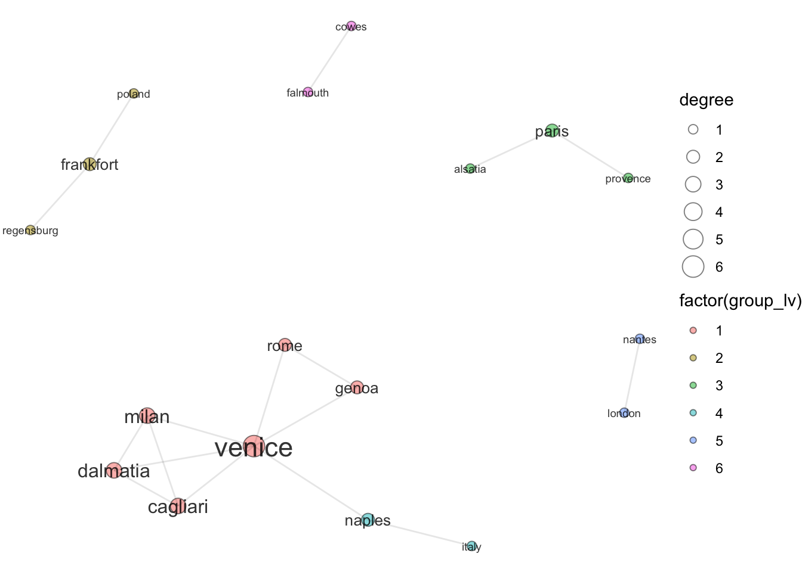
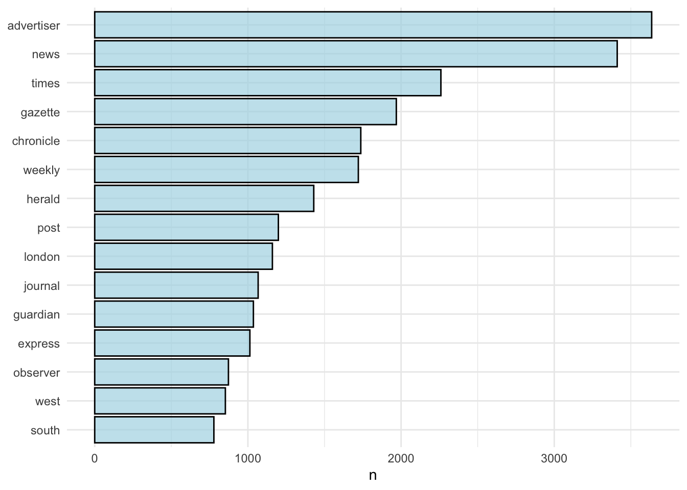
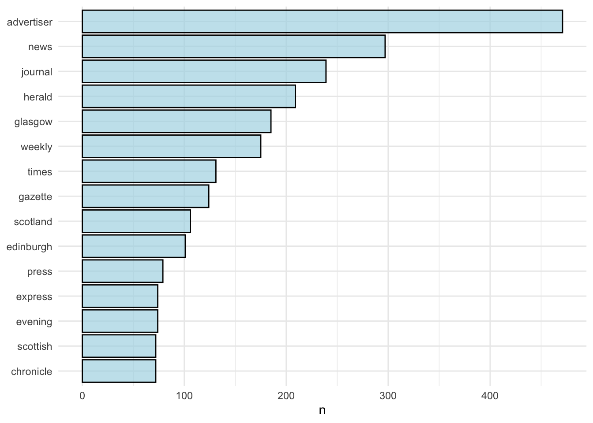

13 Bipartite network with R
13.0.1 Can newsbooks tell us something about they way place was organised in the seventeenth century?

Copyright JISC/British Library
13.0.2 Background
I’ve written elsewhere about how until the end of the seventeenth century, news was written in paragraphs. In the sample page above you can see that the paragraphs start with a place dispatch, and some of them contain news from other places. If you look at the paragraph ‘From Hamburg, April 12 stilo novo’ on the second page, you’ll see that the paragraph contains news ‘from Denmark’. News from Denmark was being sent to Hamburg. I spent much of my PhD research looking for these connections, because I think they tell you a lot about information flow.
Here I describe a bipartite network, meaning that places are connected if they share the same paragraph - but we need a) a list of places to work with and b) some way of filtering out so we only get the headers and then text preceded by ‘from’.
These are the steps:
- Download the Lancaster newsbook corpus
- Turn it into plain text, and run it through the Edinburgh geoparser to get a list of places
- Generate a list of all places found by the geoparser
- Go back to the original files, add all the places found, organised by paragraph
- In R, use this to make a bipartite network, where the edges are a shared paragraph.
I’ve done all this in a markdown document which contains both Python and R, but to be completely reproducible it requires downloading a piece of software called the Edinburgh geoparser and running a shell script. I’ve included this as text instructions rather than code.
Make sure we load Python3 and not 2:
Download the Lancaster newsbook corpus from here: https://ota.ox.ac.uk/id/2531
It’s a set of newsbooks transcribed using the TEI standard.
First we need to turn all the .xml files into plain text (python):
We’ll use the BeautifulSoup library and Python to process the .xml:
This lets us run Python in R markdown:
Download the Edinburgh Geoparser: https://www.ltg.ed.ac.uk/software/geoparser/ and put it in your project folder.
This makes sure that we run python3 and not 2:
Use beautifulSoup to process the .xml into plain text, and put them in the ‘in’ folder of the Edinburgh geoparser.
from bs4 import BeautifulSoup
import glob
all_files = glob.glob("/Users/yannryan/Desktop/r-projects/r-for-news-data/data/1654_newsbooks/*.xml")
for n, file in enumerate((all_files)):
with open("/Users/yannryan/Desktop/r-projects/r-for-news-data/geoparser-v1.1/in/file{}.txt".format(n),"a+") as f:
infile = open(file, encoding = 'latin1').read()
soup = BeautifulSoup(infile)
print(soup.text, file = f)13.0.3 Bulk geoparsing
To bulk geoparse the text files, follow the instructions here: https://programminghistorian.org/en/lessons/geoparsing-text-with-edinburgh#geo-parsing-multiple-text-files
Download the shell script: http://groups.inf.ed.ac.uk/geoparser/scripts/run-multiple-files.sh and put it in the scripts folder.
Open the script and change settings to the following - this uses the geonames dataset, and it gives a bounding box around Europe, within which the geoparser will try to find the places first.
cat $i | ./run -t plain -g geonames -o $outputdirname $prefix -lb 27.3 68.5 52.2 34.3 10
Next we set the path to point to bash instead of Python.
Navigate to the scripts folder, and run the script. It takes some time, so I’ve only done a small number of files to demonstrate.
## Processing ../in/file0.txt
## Processing ../in/file1.txt
## Processing ../in/file2.txt
## Processing ../in/file3.txt
## Processing ../in/file4.txtThis gives us a lot of files. One ends in .gaz.xml, and just lists each of the places in very simple XML. We can go back to the files at a later point and get coordinates, but just the place names will do for now.
We want a list of places to then feed back into the Lancaster .xml which has paragraph information.
This code below creates the list of places, including coordinates, from the Edinburgh geoparser:
First back to Python:
from bs4 import BeautifulSoup
import glob
read_gaz_files = glob.glob("/Users/yannryan/Desktop/r-projects/r-for-news-data/geoparser-v1.1/out/file*.gaz.xml")
outputfile = open('geoparsedfiles_b.tsv', 'w')
for file in read_gaz_files:
xml = open(file).read()
soup = BeautifulSoup(xml)
for place in soup.find_all('place'):
if place['clusteriness_rank'] == "1":
print(place['name'] + '\t' + place['lat'] + '\t' + place['long'], file = outputfile)This next bit is in R, because I haven’t got around to learning proper data wrangling in python yet.
Load some R libraries we’ll use:
Load the file from R, change the column names. Ok this bit might be a bit pointless.
geoparsedfiles <- read.delim("geoparsedfiles.tsv", header=FALSE, encoding = 'Latin1')
colnames(geoparsedfiles) = c('place', 'lat', 'lng')Write it back to a .csv for python (sorry)
Using the list of places from the Edinburgh geoparser, we go through all the original Lancaster newsbook files and add places, as well as a unique code for each paragraph:
It uses the BeautifulSoup library to parse the XML.
Basically this next code:
- checks the first and second word of each paragraph, and if they are in our list of places found by Edinburgh, it prints them, along with a unique paragraph code, and the newspaper issue filename.
- Checks through each word in each paragraph, and any time it finds ‘from’, it prints out the following word, and again, the unique code and filename.
from bs4 import BeautifulSoup
import glob
from csv import DictReader # Make a list of every place found by Edinburgh geoparser
with open("places_foreign.csv") as f:
cityList = [row["place"] for row in DictReader(f)]
cityList = [x.lower() for x in cityList]
index_int = 0
all_files = glob.glob("./data/1654_newsbooks/*.xml")
print(all_files)## ['./data/1654_newsbooks/PerfDiurn220.xml', './data/1654_newsbooks/PerfDiurn221.xml', './data/1654_newsbooks/PerfDiurn223.xml', './data/1654_newsbooks/PerfDiurn222.xml', './data/1654_newsbooks/PerfDiurn218.xml']log = open('paragraphs_foreign_c.tsv', 'w')
for file in all_files:
newsbook = open(file, encoding = 'latin1').read()
soup = BeautifulSoup(newsbook)
for link in soup.find_all('p'):
paragraph_list = []
paragraph_list.append(link.text)
try:
for paragraph in paragraph_list:
index_int +=1
lower_list = [x.lower() for x in paragraph.split(' ')]
if lower_list[0] in cityList:
print(lower_list[0]+ '\t' + str(index_int) + '\t' + file[22:-4] + '\t' + 'x' + '\t' + 'header', file = log)
elif lower_list[1] in cityList:
print(lower_list[1]+ '\t' + str(index_int) + '\t' + file[22:-4] + '\t' + 'x' + '\t' + 'header', file = log)
for index, item in enumerate(lower_list):
next = index + 1
if next < len(lower_list):
if item == 'from':
if lower_list[index +1] in cityList:
print(lower_list[index + 1] + '\t' + str(index_int) + '\t' + file[67:-4] + '\t', next, file = log)
except:
passLoad libraries for making the bipartite network:
##
## Attaching package: 'tidygraph'## The following object is masked from 'package:stats':
##
## filter##
## Attaching package: 'igraph'## The following object is masked from 'package:tidygraph':
##
## groups## The following objects are masked from 'package:purrr':
##
## compose, simplify## The following object is masked from 'package:tidyr':
##
## crossing## The following object is masked from 'package:tibble':
##
## as_data_frame## The following object is masked from 'package:rgeos':
##
## union## The following objects are masked from 'package:dplyr':
##
## as_data_frame, groups, union## The following objects are masked from 'package:stats':
##
## decompose, spectrum## The following object is masked from 'package:base':
##
## union##
## Attaching package: 'ggraph'## The following object is masked from 'package:sp':
##
## geometryLoad the file we’ve made with Python, get rid of the unnecessary fourth column, and have a look:
paragraphs_foreign <- read.delim(
"paragraphs_foreign.tsv",
header=FALSE,
stringsAsFactors=FALSE) %>% distinct(V1,V2, V3, .keep_all = TRUE) %>% select(V1, V2, V3, V5)
print(head(paragraphs_foreign))## V1 V2 V3 V5
## 1 paris 10 PerfDiurn220 header
## 2 frankfort 15 PerfDiurn220 header
## 3 frankfort 15
## 4 scotland 19
## 5 leith 20 PerfDiurn220 header
## 6 edinburgh 26 PerfDiurn220 headerChange the column names and keep only distinct rows - this is because our headers will also get picked up by the second part of the algorithm as in the code above. Also add ‘inner’ to the blank fields - now we know whether our location was a header (so a place of dispatch) or an inner (relay) place. Very useful.
13.0.4 Mapping locations
First we can map the places by volume of mentions, colour by type - whether they were a relay or first point of dispatch.
## Joining, by = "place"## place paragraph title type lat lng
## 1 paris 10 PerfDiurn220 header 40.40368 -80.51257
## 2 frankfort 15 PerfDiurn220 header 52.45750 -7.42056
## 3 frankfort 15 inner 52.45750 -7.42056
## 4 scotland 19 inner 41.69843 -72.08146
## 5 leith 20 PerfDiurn220 header 55.97130 -3.17230
## 6 edinburgh 26 PerfDiurn220 header -24.67740 31.22657
## 7 italy 30 PerfDiurn220 header 33.52183 36.28050
## 8 italy 30 inner 33.52183 36.28050
## 9 naples 30 inner 14.32771 120.97567
## 10 venice 31 PerfDiurn220 header 14.32641 120.97603
## 11 venice 31 inner 14.32641 120.97603
## 12 antwerp 40 PerfDiurn220 header 51.20900 4.43000
## 13 nantes 42 inner -24.07948 29.35000
## 14 london 42 inner -24.81927 31.04765
## 15 dalkeith 45 PerfDiurn220 header 55.89317 -3.06806
## 16 dalkeith 45 inner 55.89317 -3.06806
## 17 dover 57 inner 43.19786 -70.87367
## 18 frankfort 58 PerfDiurn221 header 52.45750 -7.42056
## 19 frankfort 58 inner 52.45750 -7.42056
## 20 regensburg 58 inner 49.01315 12.11190
## 21 venice 59 PerfDiurn221 header 14.32641 120.97603
## 22 venice 59 inner 14.32641 120.97603
## 23 dalmatia 59 inner 40.65425 -76.90248
## 24 milan 59 inner 41.29755 -82.60545
## 25 cagliari 59 inner -30.24671 27.03918
## 26 weems 64 inner 37.65486 -76.44384
## 27 leith 65 PerfDiurn221 header 55.97130 -3.17230
## 28 leith 65 inner 55.97130 -3.17230
## 29 paris 73 PerfDiurn221 header 40.40368 -80.51257
## 30 rome 73 inner 43.21285 -75.45573
## 31 brussels 74 PerfDiurn221 header 14.32037 120.95255
## 32 brussels 74 inner 14.32037 120.95255
## 33 leith 85 PerfDiurn221 header 55.97130 -3.17230
## 34 milford 87 PerfDiurn221 header 40.56871 -75.09462
## 35 milford 87 inner 40.56871 -75.09462
## 36 scotland 96 inner 41.69843 -72.08146
## 37 dalkeith 97 PerfDiurn223 header 55.89317 -3.06806
## 38 amsterdam 102 PerfDiurn223 header 14.34810 120.94402
## 39 eastland 104 PerfDiurn223 header 39.75455 -76.11523
## 40 paris 105 PerfDiurn223 header 40.40368 -80.51257
## 41 paris 105 inner 40.40368 -80.51257
## 42 alsatia 105 inner 32.61291 -91.18233
## 43 plymouth 118 PerfDiurn223 header 41.67204 -73.05289
## 44 plymouth 118 inner 41.67204 -73.05289
## 45 rome 121 PerfDiurn223 header 43.21285 -75.45573
## 46 rome 121 inner 43.21285 -75.45573
## 47 venice 123 PerfDiurn223 header 14.32641 120.97603
## 48 venice 123 inner 14.32641 120.97603
## 49 brussels 124 inner 14.32037 120.95255
## 50 inverness 126 PerfDiurn223 header 18.27531 -77.36862
## 51 inverness 126 inner 18.27531 -77.36862
## 52 inverness 127 PerfDiurn223 header 18.27531 -77.36862
## 53 england 128 inner 14.32689 120.97685
## 54 harwich 133 inner 42.38339 -82.03309
## 55 dalkeith 139 inner 55.89317 -3.06806
## 56 naples 141 PerfDiurn222 header 14.32771 120.97567
## 57 naples 141 inner 14.32771 120.97567
## 58 venice 141 inner 14.32641 120.97603
## 59 frankfort 142 PerfDiurn222 header 52.45750 -7.42056
## 60 frankfort 142 inner 52.45750 -7.42056
## 61 poland 142 inner 14.32581 120.97750
## 62 regensburg 143 PerfDiurn222 header 49.01315 12.11190
## 63 regensburg 143 inner 49.01315 12.11190
## 64 mylor 148 PerfDiurn222 header -35.04303 138.75900
## 65 mylor 148 inner -35.04303 138.75900
## 66 paris 155 PerfDiurn222 header 40.40368 -80.51257
## 67 paris 155 inner 40.40368 -80.51257
## 68 provence 155 inner 19.53333 -72.10000
## 69 luxemburg 156 inner 43.39589 -80.70690
## 70 antwerp 157 PerfDiurn222 header 51.20900 4.43000
## 71 venice 167 PerfDiurn222 header 14.32641 120.97603
## 72 venice 167 inner 14.32641 120.97603
## 73 genoa 167 inner 38.12203 -82.45987
## 74 rome 167 inner 43.21285 -75.45573
## 75 paris 168 PerfDiurn222 header 40.40368 -80.51257
## 76 scarborough 181 PerfDiurn222 header 18.30000 -77.38333
## 77 newcastle 181 inner 53.30111 -6.50222
## 78 amsterdam 182 PerfDiurn222 header 14.34810 120.94402
## 79 dover 183 PerfDiurn222 header 43.19786 -70.87367
## 80 leith 184 PerfDiurn222 header 55.97130 -3.17230
## 81 plymouth 193 PerfDiurn218 header 41.67204 -73.05289
## 82 stockholm 195 inner 14.34789 120.94408
## 83 naples 200 PerfDiurn218 header 14.32771 120.97567
## 84 naples 200 inner 14.32771 120.97567
## 85 paris 202 PerfDiurn218 header 40.40368 -80.51257
## 86 paris 223 PerfDiurn218 header 40.40368 -80.51257
## 87 rome 223 inner 43.21285 -75.45573
## 88 chester 226 PerfDiurn218 header 40.78427 -74.69683
## 89 dublin 226 inner 40.37177 -75.20156
## 90 falmouth 228 PerfDiurn218 header 18.47821 -77.65167
## 91 falmouth 228 inner 18.47821 -77.65167
## 92 cowes 228 inner 50.76306 -1.29772
## 93 edinburgh 231 PerfDiurn218 header -24.67740 31.22657Though it’s good at finding locations, the coordinates from the Edinburgh software are pretty terrible. We can do better with an off the shelf geocoder.
Geopy is a Python geocoder. Intructions on how to use it are here. You’ll need to sign up for a key for whichever geocoder you want to use (I use Bing, because it allows bulk geocoding with a free API). Your key would go after api_key=
from functools import partial
import pandas as pd
df = pd.read_csv("places_foreign.csv")
from geopy.point import Point
df = df['place'].value_counts()
df.to_csv('out.csv')df = pd.read_csv("out.csv", names=['name','amount'])
from geopy.geocoders import Bing
geolocator = Bing(api_key="ApDo61amTsQG-fkx14lyuQw6ELnaxJScMTSYTXm-icu1VdHGkmIUDNdrxDUc0uOQ")
from geopy.extra.rate_limiter import RateLimiter
geocode = RateLimiter(geolocator.geocode, min_delay_seconds=.1)
from tqdm._tqdm_notebook import tqdm_notebook
tqdm_notebook.pandas(desc = "Geocoding locations:")
df['location'] = df['name'].progress_apply(partial(geocode, user_location=(Point(latitude=53.5, longitude=2.4)),culture='EN'))df['point'] = df['location'].apply(lambda loc: tuple(loc.point) if loc else None)
df.to_csv('out.csv')Load the geocoded points and do some processing:
## Warning: Missing column names filled in: 'X1' [1]## Parsed with column specification:
## cols(
## X1 = col_double(),
## name = col_character(),
## amount = col_double(),
## location = col_character(),
## point = col_character()
## )colnames(points)[2] = 'place'
points$place = tolower(points$place)
points = points %>% mutate(point = str_replace(point,'\\(','')) %>% separate(col = point, into = c('lat','lng'), sep = ',')## Warning: Expected 2 pieces. Additional pieces discarded in 259 rows [1, 2, 3, 4,
## 5, 6, 7, 8, 9, 10, 11, 12, 13, 14, 15, 16, 17, 18, 19, 20, ...].## Joining, by = "place"## # A tibble: 56 x 8
## # Groups: place [40]
## place type n X1 amount location lat lng
## <chr> <chr> <int> <dbl> <dbl> <chr> <chr> <chr>
## 1 alsatia inner 1 71 2 London, England, U… 51.513000… " -0.107000…
## 2 amster… header 2 27 3 Amsterdam, North H… 52.334800… " 4.8705301…
## 3 antwerp header 2 247 1 Antwerp, Belgium 51.216999… " 4.4000000…
## 4 brusse… header 1 32 3 Brussels Region, B… 50.836044… " 4.3705911…
## 5 brusse… inner 2 32 3 Brussels Region, B… 50.836044… " 4.3705911…
## 6 caglia… inner 1 251 1 Cagliari, Sard., I… 39.214538… " 9.1104898…
## 7 chester header 1 53 2 Chester, England, … 53.188129… " -2.894350…
## 8 cowes inner 1 98 1 Cowes, England, Un… 50.758411… " -1.297870…
## 9 dalkei… header 2 5 5 Dalkeith, Scotland… 55.892959… " -3.068870…
## 10 dalkei… inner 2 5 5 Dalkeith, Scotland… 55.892959… " -3.068870…
## # … with 46 more rowsDraw a blank map:
ggplot() +
geom_polygon(data = map, aes(x = long, y = lat, group = group), fill = 'gray50') +
coord_fixed(1.3, xlim = c(-12, 25), ylim = c(35, 60)) 
ggplot() +
geom_polygon(data = map, aes(x = long, y = lat, group = group), fill = 'gray60') +
coord_fixed(1.3, xlim = c(-12, 25), ylim = c(35, 60)) + geom_point(data = paragraphs_foreign %>% group_by(place, type) %>%
tally() %>%
left_join(points), aes(x = as.numeric(lng), y = as.numeric(lat), size = n, fill = type), alpha = .6, color = 'black', pch = 21) + theme_void() +
theme(legend.position = 'bottom')## Joining, by = "place"
13.1 Bipartite network
Now on to the network.
Make a unique code by concatenating the paragraph and title strings:
Now we have a dataframe with geographic terms, each with a unique paragraph code, and information on whether they were in the header. Basically I’ve just invalidated the first six months of my PhD research.
Make our final file, which is just the placename and the unique paragraph code. Filter out ‘York’ and ‘Conde’ because although these are places, they are used much more to refer people in this set of newsbooks and throw off the data:
networkdf = paragraphs_foreign %>%
select(place, code) %>%
filter(!place %in% c('York', 'Conde'))
head(networkdf)## place code
## 1 paris 10PerfDiurn220
## 2 frankfort 15PerfDiurn220
## 3 frankfort 15
## 4 scotland 19
## 5 leith 20PerfDiurn220
## 6 edinburgh 26PerfDiurn220Time to make a bipartite network as described here, using igraph: https://rpubs.com/pjmurphy/317838
A bipartite network is one in which the elements are connected because they share a common property. So in this example, our elements are cities, connected because they share a paragraph.
First make a regular igraph network:
Next we make the bipartite matrix
V(g)$type <- bipartite_mapping(g)$type
bipartite_matrix <- as_incidence_matrix(g)
title_matrix_prod <- t(bipartite_matrix) %*% bipartite_matrixThis creates a matrix with each place in each row and each column. The numbers represent the times they were mentioned in the same paragraph. We can see, for example, that Paris and Flanders were mentioned 4 times together, but Paris and Scotland only once. When we go to draw the network, Paris will be placed closer to Flanders than to Scotland.
place_matrix_prod <- bipartite_matrix %*% t(bipartite_matrix)
place_matrix_prod <- bipartite_matrix %*% t(bipartite_matrix)
diag(place_matrix_prod) <- 0
place_matrix_prod[order(place_matrix_prod[,1], decreasing = TRUE),][0:10,0:10]## paris frankfort scotland leith edinburgh italy naples venice antwerp
## alsatia 1 0 0 0 0 0 0 0 0
## provence 1 0 0 0 0 0 0 0 0
## paris 0 0 0 0 0 0 0 0 0
## frankfort 0 0 0 0 0 0 0 0 0
## scotland 0 0 0 0 0 0 0 0 0
## leith 0 0 0 0 0 0 0 0 0
## edinburgh 0 0 0 0 0 0 0 0 0
## italy 0 0 0 0 0 0 1 0 0
## naples 0 0 0 0 0 1 0 1 0
## venice 0 0 0 0 0 0 1 0 0
## nantes
## alsatia 0
## provence 0
## paris 0
## frankfort 0
## scotland 0
## leith 0
## edinburgh 0
## italy 0
## naples 0
## venice 0This turns the matrix into a network graph object:
places_overlap <- graph_from_adjacency_matrix(place_matrix_prod,
mode = "undirected",
weighted = TRUE)This turns the network graph object into a tidygraph object, which I find easier to work with.
## # A tbl_graph: 40 nodes and 17 edges
## #
## # An undirected simple graph with 27 components
## #
## # Node Data: 40 x 1 (active)
## name
## <chr>
## 1 paris
## 2 frankfort
## 3 scotland
## 4 leith
## 5 edinburgh
## 6 italy
## # … with 34 more rows
## #
## # Edge Data: 17 x 3
## from to weight
## <int> <int> <dbl>
## 1 1 24 1
## 2 1 31 1
## 3 2 14 1
## # … with 14 more rowsDraw the network diagram:
Unsurprisingly, places associated with each other are placed close together. Stockholm, Gothenburg, and Frankfurt form a separate group, for example. Points are sized by their overall connections: Paris and London have the most, and are at the centre.
tg %>%
activate(nodes) %>%
mutate(degree = centrality_degree()) %>%
mutate(group_lv = group_louvain()) %>%
filter(degree>0) %>%
ggraph(layout = 'nicely') +
geom_node_point(alpha = .5,
pch = 21,
color = 'black',
aes(size = degree,
fill = factor(group_lv)))+
geom_edge_link(alpha = .1) +
geom_node_text(alpha = .8,
aes(size = degree,
label =ifelse(degree > 0,
as.character(name),
NA_character_)),
repel = FALSE,
show.legend = FALSE) +
scale_size_area() +
theme_void() +
theme(legend.position = 'right')
I think this has actually done an amazing job - it’s really similar to the network I made with manual data. Important places are in the centre, and some connecting cities (Madrid, Genoa, Venice, for example) are really obvious in the network.
Tidygraph allows for lots of easy calculations of network metrics - here I’ve plotted the total connections - here’s the top 20:
tg %>%
activate(edges) %>%
activate(nodes) %>%
mutate(degree = centrality_degree()) %>%
as.data.frame() %>%
arrange(desc(degree)) %>% head(20) %>%
ggplot() +
geom_bar(aes(x = reorder(name, degree), y = degree), stat = 'identity', fill = 'lightblue', color = 'black', alpha = .8) + coord_flip() + theme_minimal() + ggtitle("1654 newsbook locations, ranked by connections (degree):") + theme(axis.title.y = element_blank()) Here’s a plot of another measure of centrality, betweenness, which measures how like a node is to be used as a path between all other pairs of nodes.
Here’s a plot of another measure of centrality, betweenness, which measures how like a node is to be used as a path between all other pairs of nodes.
tg %>%
activate(edges) %>%
activate(nodes) %>%
mutate(between = centrality_betweenness()) %>%
as.data.frame() %>%
arrange(desc(between)) %>%
ggplot() +
geom_bar(aes(x = reorder(name, between), y = between), stat = 'identity', fill = 'lightblue', color = 'black', alpha = .8) + coord_flip() + theme_minimal() + ggtitle("1654 newsbook locations, ranked by betweenness:") + theme(axis.title.y = element_blank())
tg %>%
activate(nodes) %>%
mutate(degree = centrality_degree()) %>%
mutate(group_lv = group_louvain()) %>%
left_join(tg %>%
activate(nodes) %>%
mutate(degree = centrality_degree()) %>%
mutate(group_lv = group_louvain()) %>%
as_tibble() %>% group_by(group_lv) %>%
tally() )%>%
filter(n>1) %>% as_tibble() %>% left_join(points, by = c('name' = 'place'))## Joining, by = "group_lv"## # A tibble: 18 x 9
## name degree group_lv n X1 amount location lat lng
## <chr> <dbl> <int> <int> <dbl> <dbl> <chr> <chr> <chr>
## 1 paris 2 3 3 4 5 Paris, IdF, Fr… 48.8571… " 2.3413…
## 2 frankf… 2 2 3 48 2 Frankfort, KY,… 38.1950… " -84.87…
## 3 italy 1 4 2 46 2 Italy 43.5290… " 12.162…
## 4 naples 2 4 2 3 5 Naples, Camp.,… 40.8401… " 14.252…
## 5 venice 6 1 6 2 5 Venice, Ven., … 45.4381… " 12.318…
## 6 nantes 1 5 2 63 2 Nantes, Pays d… 47.2181… " -1.553…
## 7 london 1 5 2 14 4 London, Englan… 51.5064… " -0.127…
## 8 regens… 1 2 3 10 4 Regensburg, BY… 49.0149… " 12.101…
## 9 dalmat… 3 1 6 30 3 Dalmatia, PA, … 40.6465… " -76.90…
## 10 milan 3 1 6 16 4 Milan, Lomb., … 45.4679… " 9.1817…
## 11 caglia… 3 1 6 251 1 Cagliari, Sard… 39.2145… " 9.1104…
## 12 rome 2 1 6 17 4 Rome, Laz., It… 41.9032… " 12.495…
## 13 alsatia 1 3 3 71 2 London, Englan… 51.5130… " -0.107…
## 14 poland 1 2 3 13 4 Poland 52.1290… " 19.393…
## 15 proven… 1 3 3 182 1 Provence, VD, … 46.8914… " 6.7277…
## 16 genoa 2 1 6 143 1 Genoa, Lig., I… 44.4103… " 8.9389…
## 17 falmou… 1 6 2 243 1 Falmouth, Engl… 50.1522… " -5.079…
## 18 cowes 1 6 2 98 1 Cowes, England… 50.7584… " -1.297…ggplot() +
geom_polygon(data = map, aes(x = long, y = lat, group = group), fill = 'gray60') +
coord_fixed(1.3, xlim = c(-12, 25), ylim = c(35, 60)) + geom_point(data = tg %>%
activate(nodes) %>%
mutate(degree = centrality_degree()) %>%
mutate(group_lv = group_louvain()) %>%
left_join(tg %>%
activate(nodes) %>%
mutate(degree = centrality_degree()) %>%
mutate(group_lv = group_louvain()) %>%
as_tibble() %>% group_by(group_lv) %>%
tally() )%>%
filter(n>1) %>% as_tibble() %>% left_join(points, by = c('name' = 'place')), aes(x = as.numeric(lng), y = as.numeric(lat), size = degree, fill = factor(group_lv)), alpha = .6, color = 'black', pch = 21) +
theme(legend.position = 'bottom') + geom_text(data = tg %>%
activate(nodes) %>%
mutate(degree = centrality_degree()) %>%
mutate(group_lv = group_louvain()) %>%
left_join(tg %>%
activate(nodes) %>%
mutate(degree = centrality_degree()) %>%
mutate(group_lv = group_louvain()) %>%
as_tibble() %>% group_by(group_lv) %>%
tally() )%>%
filter(n>1) %>%
as_tibble() %>%
left_join(points, by = c('name' = 'place')),
aes(x = as.numeric(lng),
y = as.numeric(lat),
size = degree, label = name),
alpha = .6,
color = 'black',
pch = 21) +
theme(legend.position = 'bottom')## Joining, by = "group_lv"Joining, by = "group_lv"## Warning: Ignoring unknown parameters: shape
King, Ed, ‘British Library Digitisation: Access and Copyright’, 2008
———, ‘Digitisation of British Newspapers 1800-1900’, 2007 <https://www.gale.com/intl/essays/ed-king-digitisation-of-british-newspapers-1800-1900> [accessed 2007]
Mussell, James, ‘Elemental Forms: Elemental Forms: The Newspaper as Popular Genre in the Nineteenth Century’, Media History, 20.1 (2014), 4–20 <https://doi.org/10.1080/13688804.2014.880264>
Shaw, Jane, ‘10 Billion Words: The British Library British Newspapers 1800-1900 Project: Some Guidelines for Large-Scale Newspaper Digitisation’, 2005 <https://archive.ifla.org/IV/ifla71/papers/154e-Shaw.pdf>
———, ‘Selection of Newspapers’, British Library Newspapers, 2007 <https://www.gale.com/intl/essays/jane-shaw-selection-of-newspapers>
Smits, Thomas, ‘Making the News National: Using Digitized Newspapers to Study the Distribution of the Queen’s Speech by W. H. Smith & Son, 1846–1858’, Victorian Periodicals Review, 49.4 (2016), 598–625 <https://doi.org/10.1353/vpr.2016.0041>